Model-Based Design Tool


Often in state machines, you need to take a state transition only when a specific condition (called guard condition) evaluates to TRUE at run-time. Also, quite often, you need to transition to different states, depending on the outcome of some guard conditions evaluated at run-time.
The UML provides a special construct, called "choice pseudostate", which you can use in such situations. A "choice pseudostate" allows you to split a transition into multiple outgoing paths, each one with its own guard condition.
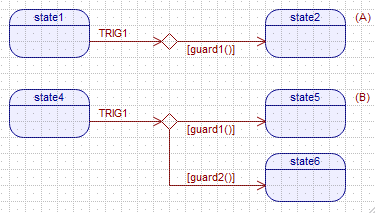
if (guard1()) {...} else if (guard2()) {...} statement (this is in fact how the QM™ code generator implements choice segments).IFs and ELSEs in the code, overusing them leads to "spaghetti" code and defeats the purpose of using state machines in the first place. For that reason guards should be used judiciously.In most UML tools, the process of drawing choice segments consists of first adding a "choice pseudostate" (diamond) and then attaching an outgoing transition segment with a guard. In QM™ this process is simplified, because the State Machine Toolbox contains ready-to-use Choice Segment tool, which combines a "choice pseudostate" with a transition segment attached permanently to it.
Make sure that the State Machine subwindow is active. In the State Machine Toolbox click on the Choice Segment tool and release the mouse button (don't drag the tool off the toolbar). At this point, when you hover the mouse over the active state diagram, the mouse pointer changes to the choice-segment tool with the "forbidden" icon (), because a choice-segment can only be added to an unattached square-end of a transition () or to an existing choice segment (). When you hover the mouse over an allowed attachment point for a choice-segment, the mouse pointer changes to the choice segment tool with the anchor (). To add the choice segment to this attachment point, press the mouse button and drag the choice segment end out to the desired edge of the target state. The transition path thus established will correspond to a regular state-to-state transition with a guard.
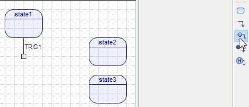
You can also add a choice segment that will become an internal transition with a guard. To do this, you simply drag the end of the choice segment and drop it not on any state edge. At this point, the choice-segment will become an internal transition. Internal transition is executed entirely within the source state and never leads to a change of state.
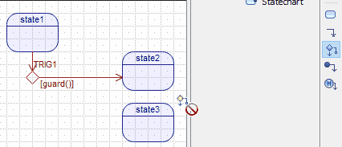
Finally, you can also add a choice segment to an unattached end of another choice segment, as illustrated in the animation below:
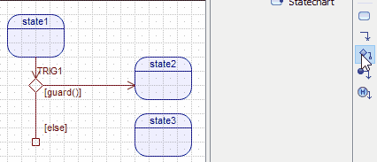
Choice Segment item can be configured by the Choice-Specific Property Sheet.
The Choice Segment property sheet contains the following properties:
Every choice segment in QM™ must have an explicit guard property, which consists of two entries: pseudocode and code. Only the code entry of the guard property is relevant for the code generation. The pseudocode entry is designed only to be displayed in the diagram to avoid clutter by minimizing the amount of text to display next to the transition shape.
For successful code generation, the Code entry of the guard property must be a legal C or C++ Boolean expression. The expression can use the state machine attributes (via the me pointer), and the event parameters of the triggering event (see section below).
Accessing the Triggering Event: The guard expression can access the original triggering event (of the transition to which the choice is attached directly or indirectly), which is provided as the e pointer of the type (QEvt const * const). This means that you have read-only access to the event, and you cannot change the e pointer. To access event parameters of the original triggering event, you typically need to downcast the event pointer e. This downcast is always based on the transition trigger (signal of the triggering event, see Transition Trigger), which means that you must always know the event type (event class) associated with the trigger.
The target property is not editable directly, but rather it is determined geometrically by the end-point of the choice segment. For state-to-state transitions, the target property lists the target state at which the end-point () terminates. For internal transitions with the square end-point (), the target property shows internal.
A Choice Segment can have optional action property, which is executed only when the guard evaluates to TRUE at runtime (see also Order of Action Evaluation).
The action property consists of two entries: pseudocode and code (see Choice Property Sheet). Only the code part of the action property is relevant for the code generation. The pseudocode field is designed only to be displayed in the diagram to avoid clutter by minimizing the amount of text to display next to the transition shape.
Pointer to the Triggering Event: The choice action code often needs to access the triggering event, which is provided as the e pointer of the type (QEvt const * const). This means that you have read-only access to the event, and you cannot change the e pointer. To access event parameters of the triggering event, you typically need to downcast the event pointer e. This downcast is always based on the transition trigger (signal of the triggering event, see Transition Trigger), which means that you must always know the event type (event class) associated with the trigger.
Once the Choice Segment item is selected as the Current Item, you can see boundary of the Text Box associated with the choice segment. The Text Box allows you to move and resize the choice text by dragging it around or dragging the Text Box Handle according to the same algorithm as the Transition Text Box.
The guard property can be defined as the special else keyword. Such else guard complements any other guard conditions attached to the same choice pseudostate. The else guard can be specified either in the code entry or pseudocode entry of the guard property. Obviously, the "else" guard makes sense only for a choice pseudostate with multiple outgoing choice segments.
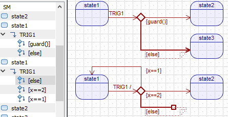
According to the UML specification, an event that cannot be processed due to all guards evaluating to FALSE must be treated as unprocessed meaning that it must be propagated to the superstate(s). This requirement has implications for choice pseudostates without an explicit else segment. Specifically, to comply with the UML semantics, the QM™ code generator will generate in such cases an implicit else branch that will cause propagation of the event to the superstate(s).
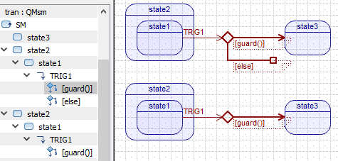
The UML specification requires that the guard conditions attached to the same choice pseudostate be mutually complementary, so that the order of evaluation of the guards does not matter. While keeping the guards complementary is still recommended in QM™, the tool evaluates guards always in the predetermined order, which you can rely on.
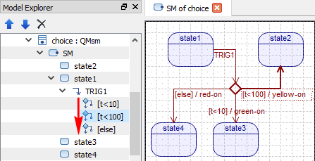
The order of guard evaluation is determined by the order of the Choice Segment items in the Model Explorer. This order can be changed by means of the Up and Down buttons on the Explorer Toolbar. Alternatively, the Current Item can be moved up or down within the Model Explorer by means of the keyboard shortcuts: Ctrl-(key-up) and Ctrl-(key-down).
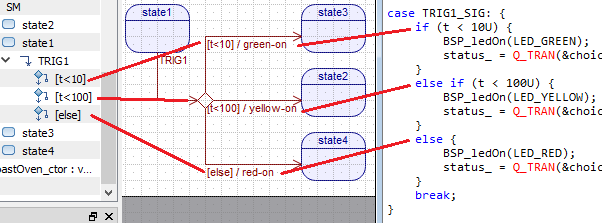
Any choice segments attached to a transition add the choice-segment actions to the action performed by the transition. The order of evaluation of all these actions is intuitive and starts always with the transition action executed unconditionally, followed by the conditional evaluation of choice-segment actions.
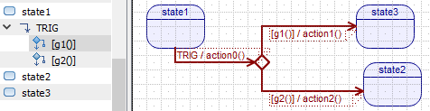
For example, the order of action evaluation in the diagram above is summarized by the following pseudocode:
As described above, Choice Segments can nest. This allows you to build complex conditional transition paths, but as always with guards, the feature should not be overused.
For example, one common mistake is to use deeply nested choice segments to choose among a number of possible transition paths (see panel (A) in the diagram below):
 vs. Muliple Choice Segments (B)")
A better and much simpler alternative is to use multiple choice segments attached to the same choice pseudostate, as shown in panel (B) in the diagram above.
A transition with multiple choice segments, some of them potentially nested, groups many elements in a small diagram space. To graphically re-arrange such a complex "ball of connectors", you need to be aware of the basic rules that apply in this situation.
The first rule is that before you can change the shape of any element, you first need to select it.
For example, if you want to move the choice-pseuodstate (the diamond ), you need to click on the original incoming transition to the choice-pseudostate. Pleease note that you quite specifically should not click on the diamond shape itself, because it is actually an overlapped collection of the incoming transion-end plus all the outgoing choce segments, so it is ambiguous which shape you actually mean. Instead, you shouild click on one of the transition segments or the begin-end of the transiton. (NOTE: You can also unambiguously select any model item in the Model Explorer view). The following animation illustrates the process:
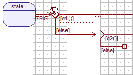
On the other hand, if you select an outgoing choice-segment, you cannot move the choice-pseudostate. Instead, you can now move just the selected choice-segment to re-attach it somewhere else.
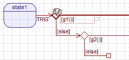